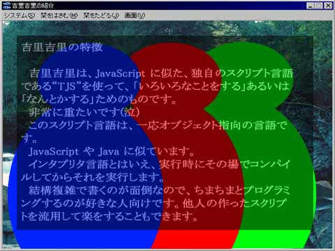
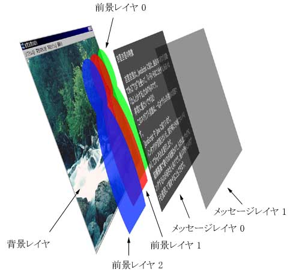

In KAG, or Kirikiri, the screen is composed entirely of layers called "layers" (similar to layers in Photoshop, etc .; a layer is called a habit by the author).
For example, if the display is as follows...

Display example
The layer configuration is as follows.

Layer configuration
In KAG, there is one
background layer base and it is displayed at the back (bottom). There are three
foreground layers 0 1 2 in front (above). In front (upper), there are two
message layers. All foreground layers and message layer 1 are initially hidden (hidden layers can be displayed by setting visible = true in the layopt tag. Foreground layers must also be displayed in the image tag) I can ).
KAG has two sets of the same layer structure, called
front page fore and
back page back. The front page is displayed on the screen, but the back page cannot be displayed on the screen. The back page is used to temporarily store images, mainly for transitions (screen switching).
The page and layer attributes of the image tag specified the front page as the back page (fore / back) and the background layer or the foreground layer (base / 0/1/2), respectively. is.
Note
The three foreground layers and two message layers are the default settings in Config.tjs.
The initial number of message layers and foreground layers can be specified with numCharacterLayers and numMessageLayers in Config.tjs, and can be changed during execution with the laycount tag.
Note
"Background", "foreground", "front", and "back" are each likely to cause confusion, but fore specified in the page attribute indicates "front screen", not "foreground layer".
The front page or back page is specified by fore and back in the page attribute, respectively. For the foreground layer, specify 0 1 2... in the layer attribute, and for the background layer, specify base.